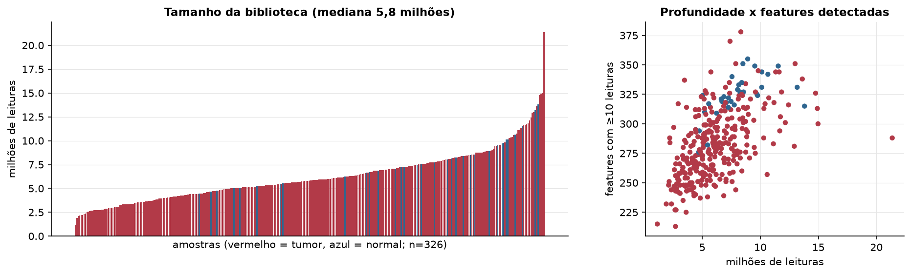
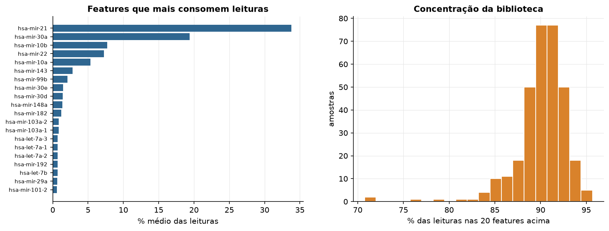
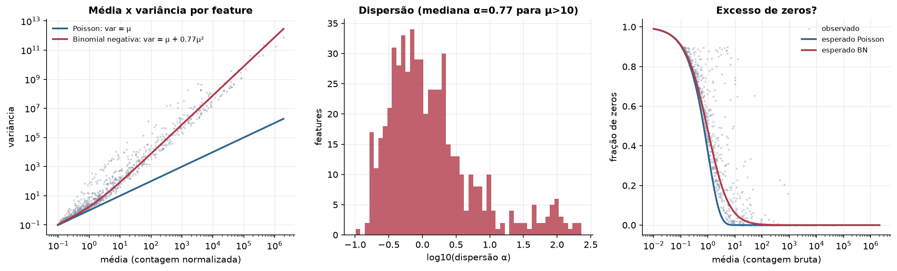
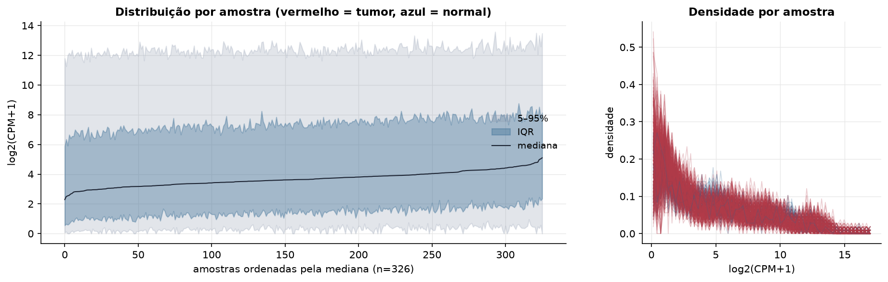
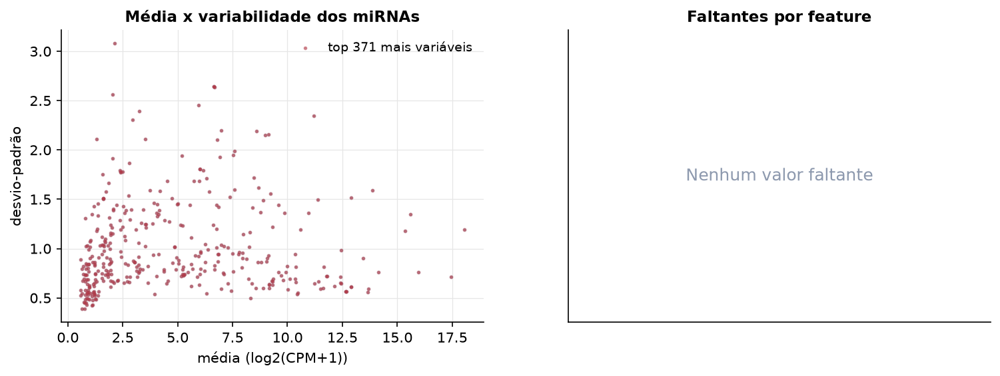
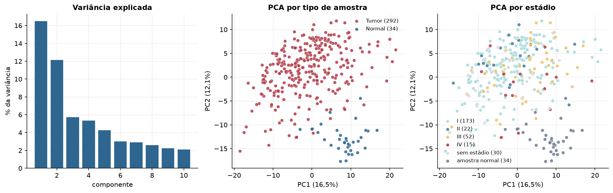
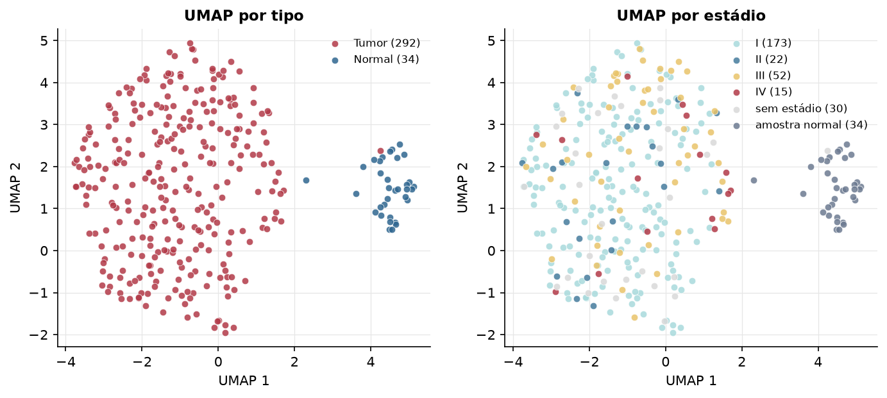
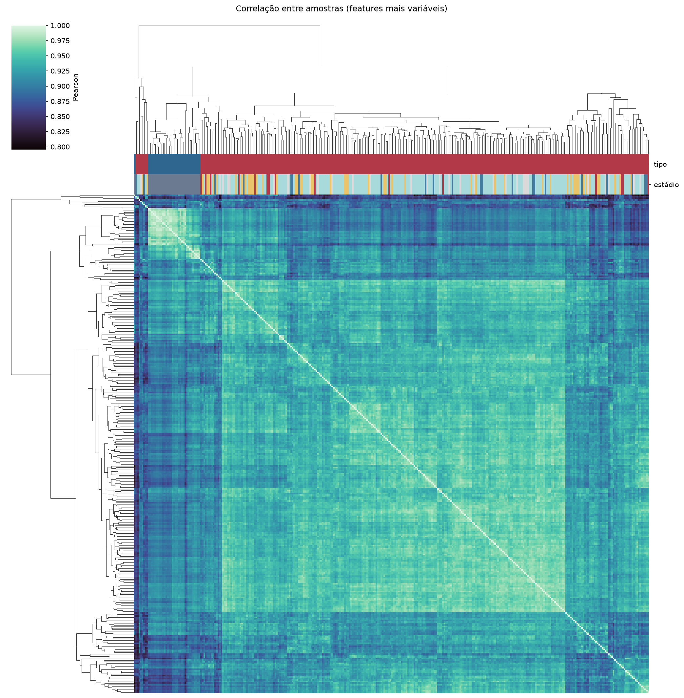
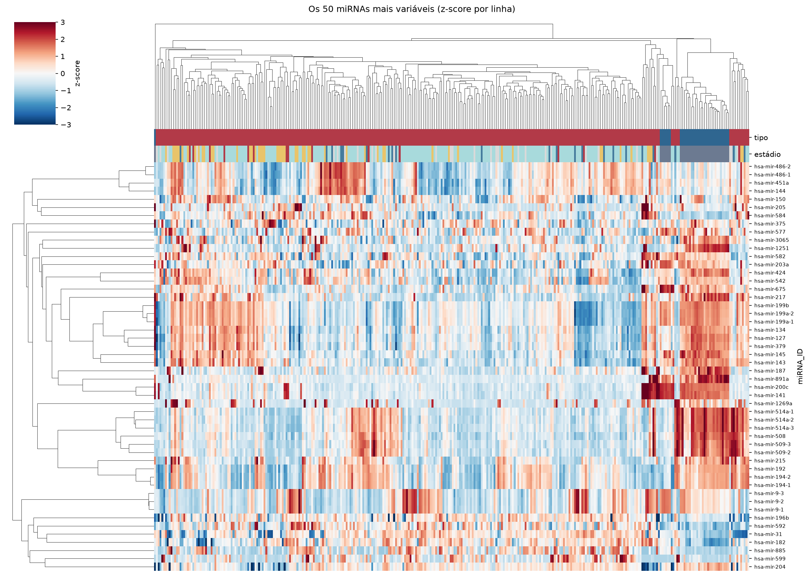
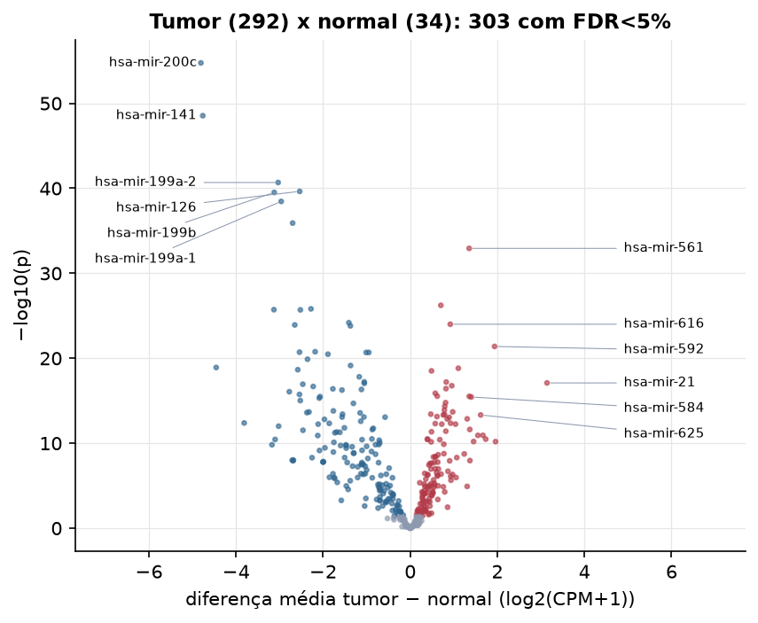

KIRP · miRNA-seq: contagens brutas (GDC)
BCGSC miRNA Profiling (miRBase v21) · gerado em 21/10/2026 23:07
5,8 Mtamanho mediano
0,77dispersão mediana α
371miRNAs
292amostras tumorais
34amostras normais
0,0%valores faltantes
Fonte: API do GDC (BCGSC miRNA Profiling)
Principais resultados
- Bibliotecas de 1,1 a 21,4 milhões de leituras (mediana 5,8). 960 de 1.881 features têm leitura em pelo menos 10% das amostras.
- A variância cresce bem acima da média: a dispersão mediana da binomial negativa é α=0.77 (para features com média > 10). Isso descarta um modelo Poisson e indica binomial negativa (ou Poisson-lognormal) na verossimilhança.
- A fração de zeros é compatível com a binomial negativa (diferença mediana -2,7%); inflação de zeros não parece necessária.
- Em média 90,5% das leituras de cada amostra vão para as 20 features mais abundantes.
- 371 miRNAs medidos em 326 amostras (292 tumorais e 34 normais); 0,0% dos valores estão faltando.
- Os dois primeiros componentes principais explicam 16,5% e 12,1% da variância das features mais variáveis.
- Correlação mediana entre amostras: 0,93.
- Amostras com correlação muito abaixo das demais (possíveis outliers técnicos): TCGA-J7-A8I2-01.
- Tumor x normal: 303 miRNAs diferentes com FDR < 5% (140 maiores no tumor, 163 maiores no normal; 34 pacientes têm o par tumor-normal).
- Mais aumentados no tumor: hsa-mir-561, hsa-mir-7156, hsa-mir-616, hsa-mir-592, hsa-mir-589, hsa-mir-1305, hsa-mir-219a-1, hsa-mir-21.
- Mais reduzidos no tumor: hsa-mir-200c, hsa-mir-141, hsa-mir-199a-2, hsa-mir-126, hsa-mir-199b, hsa-mir-199a-1, hsa-mir-139, hsa-mir-143.
- Associações clínicas com p < 0,05 nos componentes principais: PC1 com estádio (p=0.0098); PC2 com estádio (p=0.001); PC2 com sexo (p=0.0044); PC1 com idade (p=0.028); PC2 com idade (p=0.0065); PC2 com sobrevida (p=6.2e-07).
Biblioteca


Sobredispersão e zeros

Exploração em log2(CPM+1)
Features com CPM ≥ 1 em pelo menos 20% das amostras (371 features).
Distribuição dos valores


Estrutura das amostras




Tumor x normal

Features mais diferentes entre tumor e normal
| miRNA_ID | diferenca_tumor_menos_normal | t | p | fdr |
|---|---|---|---|---|
| hsa-mir-200c | -4.807 | -28.389 | 1.75e-55 | 6.51e-53 |
| hsa-mir-141 | -4.764 | -27.552 | 2.85e-49 | 5.28e-47 |
| hsa-mir-199a-2 | -3.033 | -20.538 | 2.08e-41 | 2.57e-39 |
| hsa-mir-126 | -2.539 | -23.743 | 2.3e-40 | 2.14e-38 |
| hsa-mir-199b | -3.123 | -20.464 | 3.06e-40 | 2.27e-38 |
| hsa-mir-199a-1 | -2.963 | -19.888 | 3.48e-39 | 2.15e-37 |
| hsa-mir-139 | -2.701 | -22.673 | 1.23e-36 | 6.53e-35 |
| hsa-mir-561 | 1.354 | 16.723 | 1.17e-33 | 5.44e-32 |
| hsa-mir-7156 | 0.703 | 12.177 | 5.89e-27 | 2.43e-25 |
| hsa-mir-143 | -2.279 | -15.881 | 1.54e-26 | 5.72e-25 |
| hsa-mir-145 | -3.13 | -18.502 | 1.92e-26 | 6.25e-25 |
| hsa-mir-214 | -2.522 | -18.327 | 2.02e-26 | 6.25e-25 |
| hsa-mir-450a-1 | -1.41 | -14.021 | 6.51e-25 | 1.86e-23 |
| hsa-mir-616 | 0.919 | 12.991 | 9.9e-25 | 2.62e-23 |
| hsa-mir-129-1 | -2.651 | -21.694 | 1.2e-24 | 2.97e-23 |
| hsa-mir-542 | -1.374 | -11.975 | 1.54e-24 | 3.58e-23 |
| hsa-mir-592 | 1.936 | 13.223 | 4.07e-22 | 8.89e-21 |
| hsa-mir-195 | -2.184 | -15.682 | 1.71e-21 | 3.52e-20 |
| hsa-mir-10b | -2.542 | -16.328 | 1.92e-21 | 3.69e-20 |
| hsa-mir-125b-2 | -0.951 | -11.819 | 2.07e-21 | 3.69e-20 |
| hsa-mir-125b-1 | -1.012 | -12.11 | 2.09e-21 | 3.69e-20 |
| hsa-mir-4662a | -1.89 | -14.806 | 3.34e-21 | 5.62e-20 |
| hsa-mir-424 | -2.359 | -13.656 | 1.3e-20 | 2.09e-19 |
| hsa-mir-450a-2 | -1.37 | -12.445 | 7.18e-20 | 1.11e-18 |
| hsa-mir-891a | -4.456 | -16.098 | 1.22e-19 | 1.81e-18 |
| hsa-mir-589 | 1.104 | 13.641 | 1.5e-19 | 2.14e-18 |
| hsa-mir-129-2 | -2.582 | -16.879 | 2.22e-19 | 3.05e-18 |
| hsa-mir-1305 | 0.489 | 10.919 | 3.04e-19 | 4.03e-18 |
| hsa-mir-100 | -1.171 | -10.384 | 1.51e-18 | 1.93e-17 |
| hsa-mir-26a-1 | -1.056 | -13.162 | 6.02e-18 | 7.44e-17 |
Associação com variáveis clínicas
p-valores da associação dos três primeiros componentes principais (só tumores) com estádio (Kruskal-Wallis), sexo (Mann-Whitney), idade (Spearman) e sobrevida global (Cox univariado).
| estádio (Kruskal) | sexo (Mann-Whitney) | idade (Spearman) | sobrevida OS (Cox) | |
|---|---|---|---|---|
| PC1 (17,6%) | 0.01 | 0.78 | 0.028 | 0.134 |
| PC2 (9,1%) | 0.001 | 0.004 | 0.007 | 6.23e-07 |
| PC3 (5,4%) | 0.419 | 0.116 | 0.783 | 0.346 |